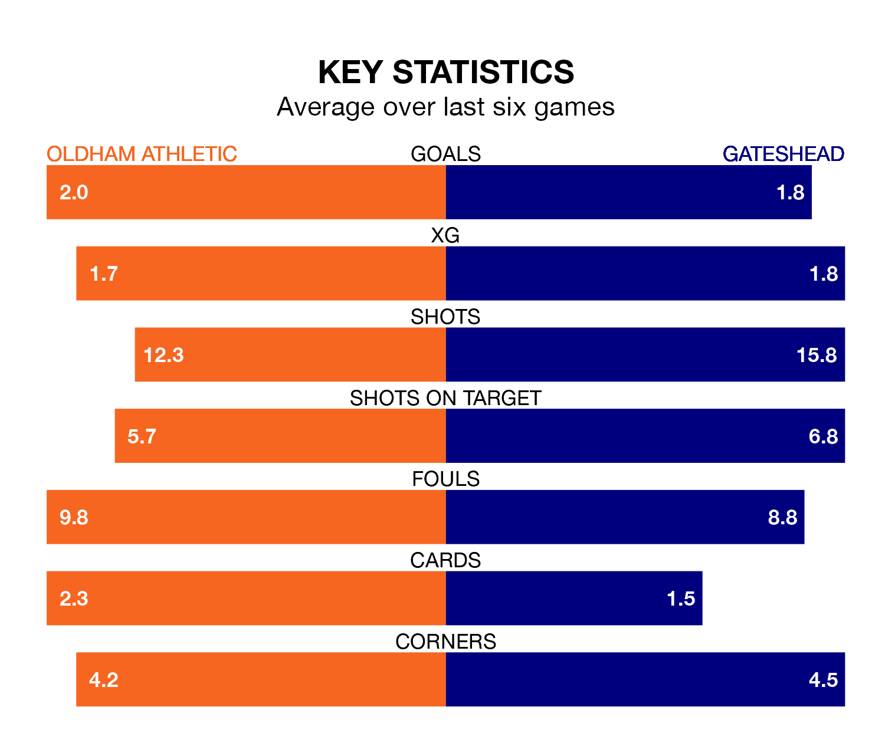

Oldham Athletic host Gateshead on Saturday at Boundary Park in National League.
In their last league match, on December 16, Oldham beat Solihull Moors 3-2 away, with goals from Nathan John Sheron (two) and Josh Stones.
Gateshead lost, 2-0 at home against Halifax Town.
With 47 goals in 22 games so far this season, Gateshead are the league's second-highest scorers with 2.1 goals per game. And they are conceding fewer than average, letting in 29 goals at a rate of 1.3 per game.
Oldham are also above average scorers, with 1.6 goals per game, compared to a league average of 1.5. They have conceded 1.5 goals per game.
In Archie Mair, the Tynesiders can rely on one of the league's safest pair of hands. He has kept seven clean sheets in his 22 appearances this season, and only one other 'keeper – Halifax Town's Samuel William Johnson – has been able to prevent the opposition scoring on more occasions in National League.
In Athletic's net, Matthew Hudson has five clean sheets in 21 games. He has conceded a goal every 73 minutes, 20% more often than the 90 minutes between goals for Mair.
The away side are sixth in the table after 22 games, of which they have won 10 and drawn six, earning 36 points.
The Latics are five places behind Gateshead in 11th, with eight wins and nine draws putting them on 33 points.
The hosts are in reasonable form in National League, with three wins and two draws from their last six games.
With three wins and a draw over that period, Gateshead's form is slightly worse – they have taken 10 points from 18, compared to Oldham's 11.
Updated: 15:16, 21/12/23